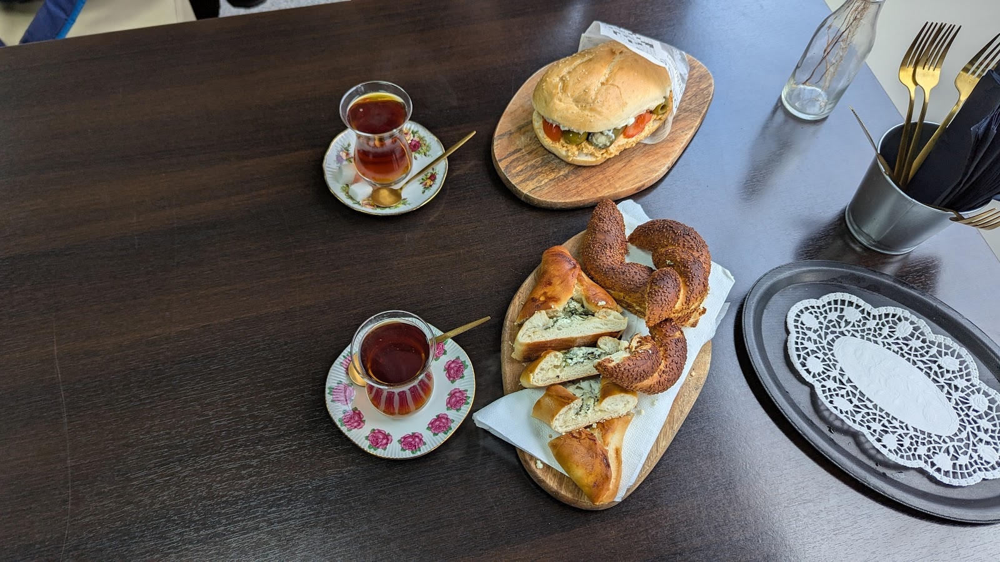
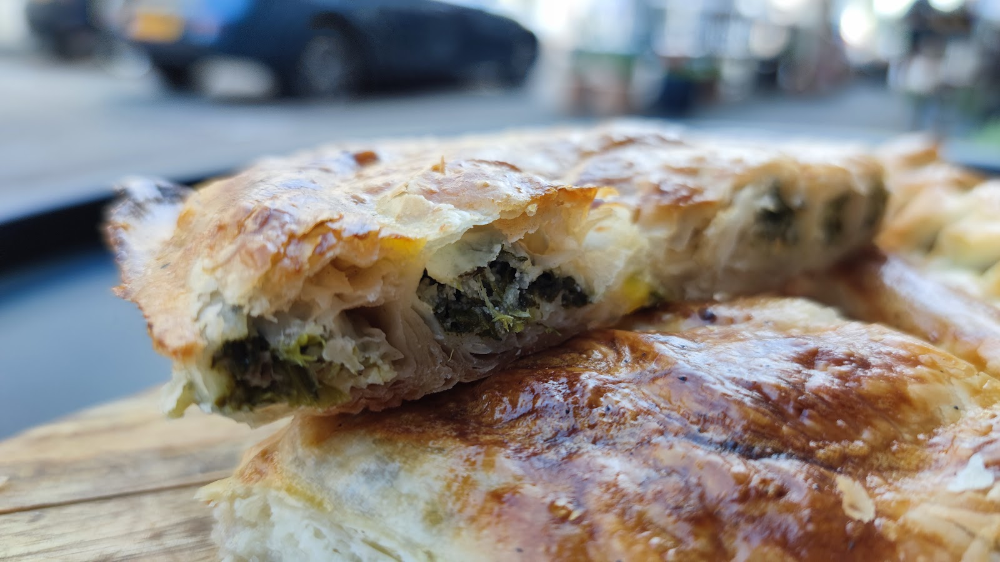
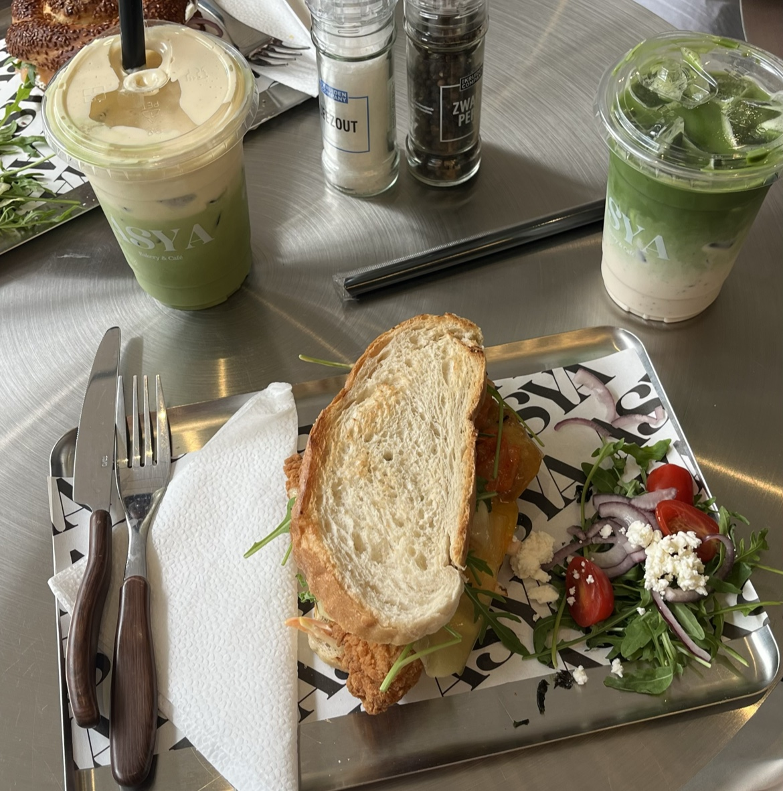
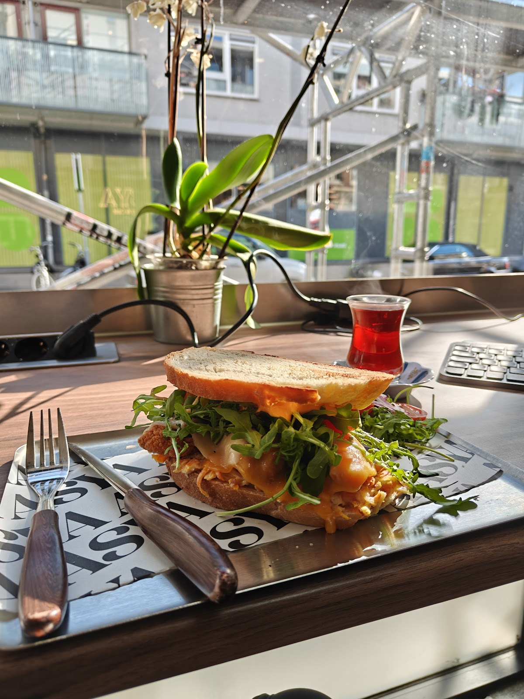
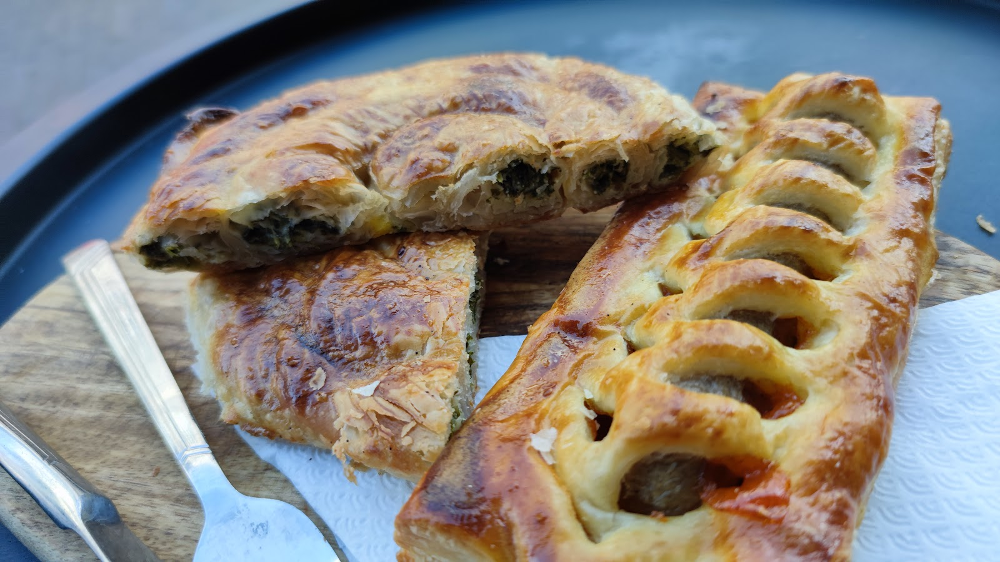
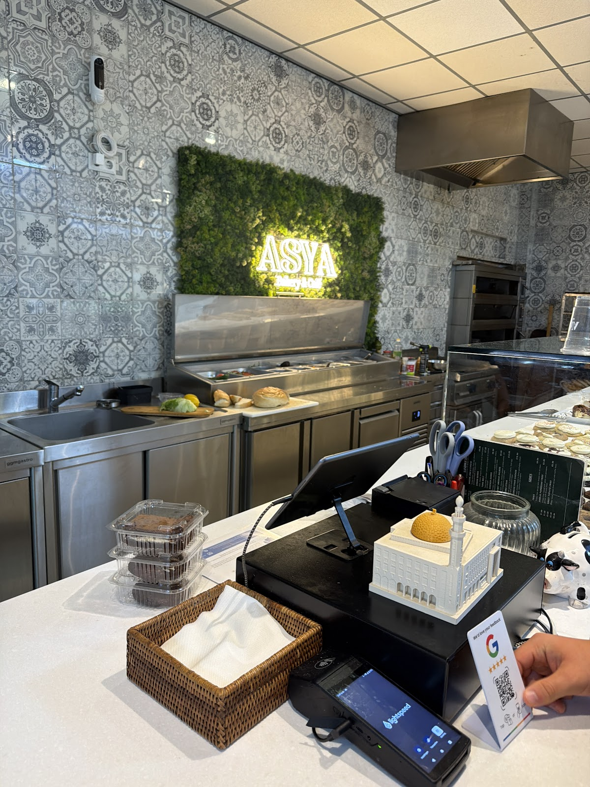
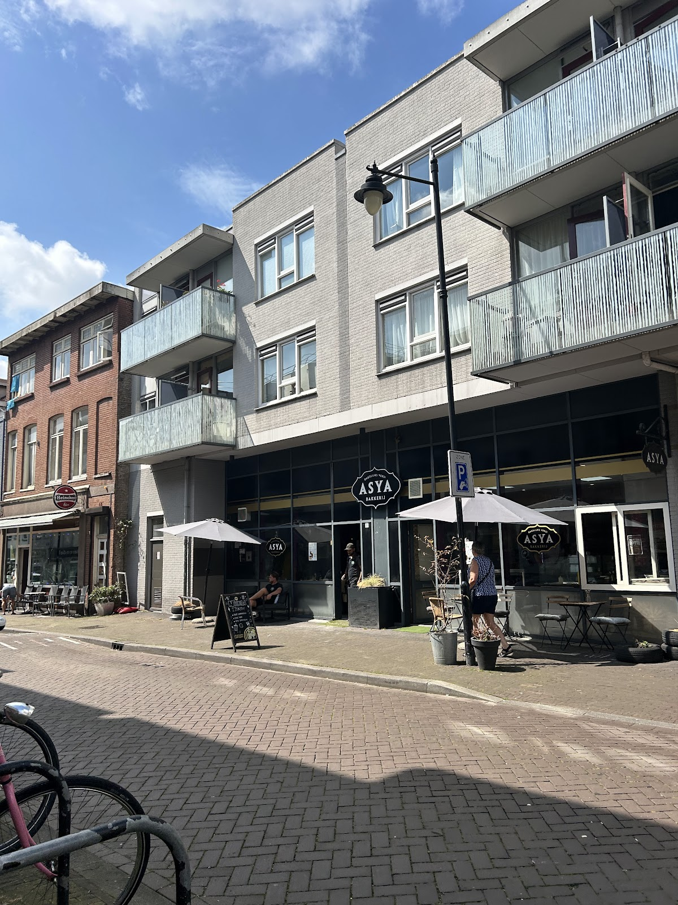

Vers brood, börek en een glas thee aan de Hommelseweg
Turkse bakkerij en café in Arnhem. Kom voor ontbijt, een broodje bij de lunch of een matcha met gebak tot laat in de avond.
Dinsdag tot en met zondag open, maandag gesloten.

Zaterdag ontbijt vanaf acht uur. Woensdag tot en met zaterdag matcha tot elf uur ’s avonds.
Wat er bij ons op tafel komt
Börek met spinazie en kaas, simit met sesam, broodjes op ons eigen brood, gebak en koekjes. Erbij: koffie, Turkse thee in een tulpglas of een ijskoude matcha.





Groene wand, grijze tegels, een terras aan de straat
Achter de toonbank wordt alles gemaakt: de broodjes, de thee, de koffie. Bij mooi weer staan de parasols buiten en zit u op het terras aan de Hommelseweg.

Wat gasten zeggen
4,6 uit 151 Google-reviews
“Ik wou dat ik hier elke dag kon genieten!! Wat een geweldige plek, het personeel is zo lief en vriendelijk, de sfeer is warm en de prijs is perfect 💋 Alles wordt met aandacht en geduld gemaakt, de koffie is geweldig en het is er altijd netjes en mooi. Echt een pareltje in Arnhem 🎁”
“Hartstikke lekkere matcha! +We zijn erg goed geholpen door de barista’s bij het maken van een keuze🫶🏼”
“Heerlijke matcha en fantastisch gebak! Alles smaakte vers en met zorg bereid. Daarnaast een gezellige sfeer en vriendelijk personeel. Zeker een aanrader en een plek waar ik graag terugkom.”
Openingstijden
| Maandag | Gesloten |
| Dinsdag | 10:00 tot 18:00 |
| Woensdag | 10:00 tot 23:00 |
| Donderdag | 10:00 tot 23:00 |
| Vrijdag | 10:00 tot 23:00 |
| Zaterdag | 08:00 tot 23:00 |
| Zondag | 10:00 tot 18:00 |
Langskomen of bellen
Asya bakery & caféHommelseweg 51
6821 LB Arnhem